▲ 국화 화단이 놓인 통도사 경내 석탑 주변. 위키미디어 기록상 2022년 10월 5일 촬영. 사진=Bernard Gagnon(위키미디어 커먼스, CC0)
"통도사는 입장료를 받을까, 주차는 얼마일까?" 2026년 10월 13일(화)에 통도사 누리집 입장료 페이지를 열어 보니 답은 "2023년 5월 4일부터 무료 적용"이었다. 대신 주차비는 경차 3,000원·중소형 6,000원·대형 15,000원이고, 이번 달 3일에 문을 다시 연 성보박물관은 12월 4일까지 한시적으로 성인 3,000원을 받는다. 가을 일정도 촘촘하다. 개산대재 법요식(10월 19일)과 국가유산 미디어아트(10월 18일까지), 국화장엄(10월 25일까지)이 겹친다. 이 글은 통도사 누리집·성보박물관 공지·양산시 관광 누리집·한국관광공사 TourAPI를 직접 열어 확인한 값만 정리했고, 단풍 절정일처럼 공식 예측이 없는 항목은 "확인하지 못했다"고 적었다.
💡 먼저 결론
입장료는 0원이지만 승용차로 가면 중소형 기준 주차비 6,000원이 든다. 박물관까지 보면 성인 2명 기준 12,000원이다(아래 계산표). 무풍한송로는 약 1km, 걸어서 20분 남짓(언론 보도)이고, 통도사가 직접 주말·공휴일에는 외부 주차장(통도환타지아 주차장5)을 먼저 이용하라고 안내했다. 이번 주말(10월 17~18일)은 부도헌다례(17일 14시)와 미디어아트 마지막 주말이다. 통도사 입장료·주차 안내 바로가기
1. 한눈에 보기 — 확인한 것과 확인하지 못한 것
통도사는 신라 선덕여왕 15년(646년) 자장율사가 영축산에 창건한 절로, 양산시 관광 누리집은 석가모니의 사리와 가사를 봉안한 불보사찰이며 2018년 6월 30일 유네스코 세계유산으로 지정됐다고 소개한다. 금강계단(국보 제290호) 때문에 대웅전에 불상이 없다는 점도 이 절의 특징이다. 방문 전에 필요한 값을 한 표로 묶었다.
| 항목 | 확인된 값 | 출처·상태 |
|---|---|---|
| 입장료 | 무료(2023-05-04부터) | 통도사 누리집 입장료 안내, TourAPI도 '무료' |
| 개방 시간 | 08:30~17:30(새벽예불 동참 시 04:00부터). TourAPI는 06:30~17:30, 연중무휴 | 누리집과 TourAPI(수정일 2026-07-20)가 다름, 사찰 기준 우선 |
| 주차비 | 경차 3,000원 / 중소형(17인승 미만) 6,000원 / 대형(17인승 이상) 15,000원 | 통도사 누리집·TourAPI 일치 |
| 성보박물관 | 2026-10-03 재개관, 한시 유료 성인 3,000원·청소년 2,000원(~12-04). 월요일 휴관 | 성보박물관 공지, 사찰 공지(2026-09-25) |
| 무풍한송로 | 약 1km, 수령 100~200년 소나무(양산시), 걸어서 20분 남짓(2023년 보도) | 공식 소요 시간은 확인 못함 |
| 단풍 절정일 | 공식 예측 없음. 카프리즘 정리 기사의 산별 목록에 영축산·통도사 없음 | '평년 기준 추정'으로 5장에 정리 |
| 올해 출입 통제 | 경내 출입을 막는 공사·통제 공지는 사찰 공지사항에서 확인하지 못함 | 공지사항 목록 열람 |
| 문의 | 사찰 055-382-7182, 템플스테이 055-384-7085, 성보박물관 055-382-1001 | 누리집·TourAPI |
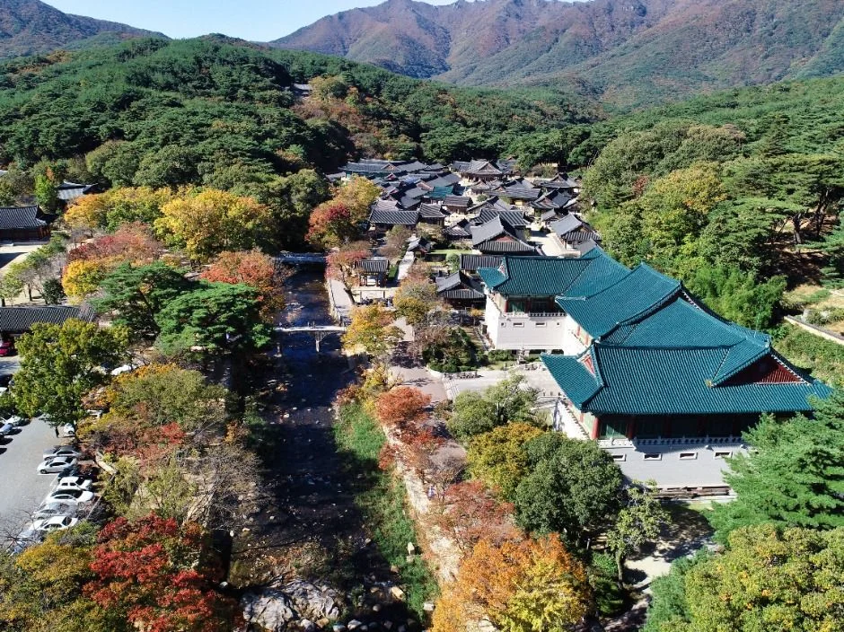
▲ 붉고 노란 잎이 섞인 숲에 둘러싸인 통도사 가람 항공 사진(한국관광공사 제공). 촬영일은 확인하지 못했다. 사진=한국관광공사
2. 입장료 — 2023년부터 0원, 관람료 면제 65곳 사찰에 통도사 포함
통도사 누리집 '입장료 및 주차장 이용안내' 페이지에는 "입장료 — 2023년 5월 4일부터 무료 적용"이라고 적혀 있다. 한국관광공사 TourAPI(contentId 126186)의 입장료 항목도 '무료'다. 이 시점은 국가지정 문화유산을 가진 사찰의 관람료 감면을 국가가 지원하도록 한 문화재보호법 개정이 시행된 날과 같다.
관람료 면제 대상 사찰 명단에도 통도사가 들어 있다. 매일신문의 2023년 5월 4일 보도는 "관람료가 면제되는 사찰에는 해인사, 법주사, 통도사, 불국사, 석굴암, 화엄사 … 등이 포함된다"고 전한다(전체 65곳 명단 원문은 직접 대조하지 못했고, 이 보도의 예시 목록 기준이다). 사찰 스스로 누리집에 밝힌 "2023년 5월 4일부터 무료"와 시행일이 같다. 같은 구조를 다룬 김제 금산사 가이드는 정책브리핑 현장 기고문을 근거로 들었다.
| 항목 | 금액 | 비고 |
|---|---|---|
| 경내 입장 | 0원 | 2023-05-04부터 무료 |
| 주차(경차) | 3,000원 | 사찰 누리집 |
| 주차(중소형, 17인승 미만) | 6,000원 | 사찰 누리집 |
| 주차(대형, 17인승 이상) | 15,000원 | 사찰 누리집 |
| 성보박물관 성인(만 19세 이상) | 3,000원 | 2026-10-03~12-04 한시 유료 |
| 성보박물관 청소년·어린이(만 8~18세) | 2,000원 | 같은 기간 |
| 템플스테이 휴식형 | 1박 10만 원 | 카프리즘 기존 기사의 공식 사이트 기준값, 이번에 재확인하지 못함 |
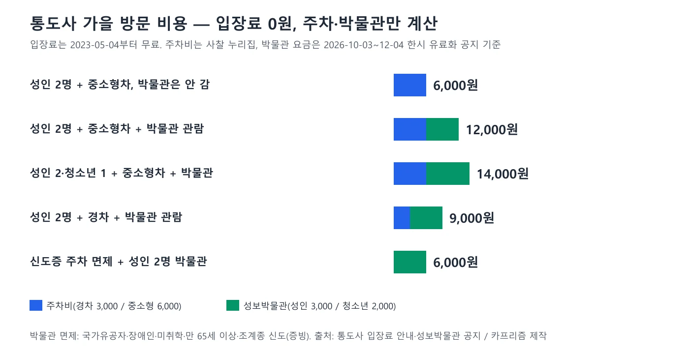
▲ 주차비와 성보박물관 관람료를 합친 방문 비용 계산(카프리즘 제작). 사진=카프리즘 제작
위 표를 합치면 성인 2명이 중소형차로 박물관까지 보면 12,000원, 박물관을 건너뛰면 6,000원이다. 경차는 주차비가 절반이라 9,000원이다. 주차비는 신도증(해당 연도 회비 납부자)이나 '장애인 주차가능' 스티커 차량이면 면제되고, 주차불가 스티커 차량은 50%를 부과한다고 사찰이 안내한다. 박물관 요금은 국가유공자·장애인·미취학 아동·만 65세 이상·조계종 신도(증빙 필수)가 면제 대상이다.
3. 주차 — 주말에는 외부 주차장부터, 임시 공영주차장 요금은 확인 못 함
통도사는 2026년 2월 25일자 공지 '통도사 주차 안내'에서 "주말 및 공휴일에는 통도사 진입 구간과 경내 주차장에 극심한 교통 혼잡이 발생하고 있다"며 통도환타지아 주차장5(통도 임시 공영주차장)를 적극 이용해 달라고 요청했다. 외부 주차장에 대면 통도사 초입의 무풍한송로를 따라 걸어 들어갈 수 있다는 설명도 붙었다. 경내로 들어간 차량은 각 주차장이 가득 차면 다음 주차장을 순서대로 이용하라고 안내한다. 공지 이미지에는 산문 주차장·매표소 쪽과 환타지아 주차장5를 잇는 도보 경로가 그려져 있다.
✅ 이 안내에서 확인하지 못한 값
통도환타지아 주차장5의 요금과 운영 시간, 주차 대수는 공지에 없었다. 경내 주차장(제1~제4주차장 등)의 대수도 확인하지 못했다. 미디어아트 리플릿에는 P1(산문 주차장)과 P2(환타지아 주차장) 두 곳이 안내돼 있다. 요금은 현장 안내판이나 사찰 회계실(055-382-7187)로 확인하자. 통도사 주차 안내 공지 바로가기
사찰 편의시설 페이지에 따르면 카페(다정카페)·한식당(다정한식, 손두부 정식)·불교용품점(선자정)이 제1주차장에 있고, 한송정·한송매점·산중다원(연화빵, 전통차)은 성보박물관과 일주문 옆에 있다. 주차장에서 내려 바로 점심이나 차를 해결하기 좋다는 뜻이다. 가을 도로 주정차 단속은 단풍철 갓길 주정차 단속 기사에서 따로 다뤘다.
4. 무풍한송로 — 약 1km, 걸어서 20분 남짓
양산시 관광 누리집의 '통도사 암자순례길' 안내는 통도사 산문을 지나면 곧바로 나오는 무풍교(舞風橋)에서 시작하는 길이 무풍한송길(舞風寒松路)이라고 설명한다. 통도계곡(청류동)을 따라 길게 뻗은 소나무숲길로, 이름은 직역하면 '춤추는 바람결에 물결치는 찬 소나무'다. 같은 페이지는 1km에 달하는 길에 수령 100~200년 소나무가 이어지고, 2018년 '제18회 아름다운 숲 전국대회'에서 대상(생명상)을 받았다고 적는다.
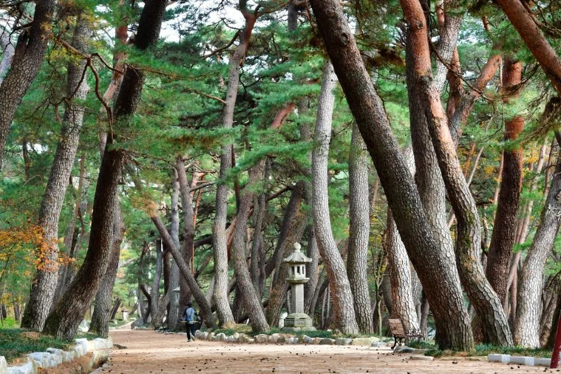
▲ 소나무 사이로 길과 석등이 이어지는 통도사의 소나무길(한국관광공사 제공). TourAPI에 무풍한송로라는 표기는 없고 촬영 시기도 확인하지 못했다. 사진=한국관광공사
| 항목 | 내용 | 출처·상태 |
|---|---|---|
| 시작 지점 | 통도사 산문을 지나 곧바로 나오는 무풍교 | 양산시 관광 누리집 |
| 길이 | 약 1km | 양산시 관광 누리집, 경향신문 주간경향(2023-10-13)도 '1km 남짓' |
| 소요 시간 | '20분 남짓이면 충분히 통도사에 닿는다' | 주간경향 2023년 기사. 공식 소요 시간은 확인 못함 |
| 소나무 | 수령 100~200년 | 양산시 관광 누리집 |
| 수상 경력 | 2018년 제18회 아름다운 숲 전국대회 대상(생명상) | 양산시 관광 누리집 |
| 통도사 권장 이용 | 주차장에 차를 대고 이 길로 걸어 들어오기 | 통도사 주차 안내 공지(2026-02-25) |
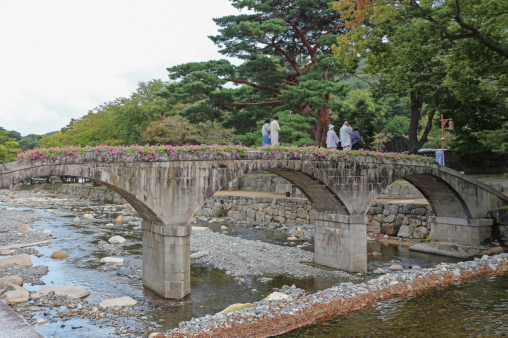
▲ 개울을 가로지르는 돌 아치 다리 일대. 위키미디어 파일명은 'Stone Arch Bridge at Tongdosa Temple'이고 위키미디어 기록상 2022년 10월 5일 촬영이다. 사진=Bernard Gagnon(위키미디어 커먼스, CC0)
걷는 시간은 사람마다 다르지만 1km면 보통 15~25분이다(카프리즘 계산). 경내 안쪽 가람은 하로전·중로전·상로전 세 구역으로 나뉘고, 사찰 누리집의 '통도사가이드' 페이지가 각 구역 전각을 안내한다.
5. 단풍 시기 — 공식 예측은 없고, 평년 기준 11월 초중순으로 추정한다
먼저 기준을 구분하자. 산림청의 '절정'은 산 전체 단풍이 50%일 때, 기상청의 '첫 단풍'은 20%, '절정'은 80%일 때를 가리킨다(두 기관 정의가 다르다). 산림청과 국립수목원이 9월 22일 발표한 2026년 단풍절정 예측지도는 카프리즘 정리 기사에 있는데, 이 기사에 정리된 산별 예측일 목록에 영축산이나 통도사는 없다(원본 지도 이미지는 직접 대조하지 못했다). 같은 기사 기준으로 단풍나무류 전국 절정 예측일은 10월 31일, 지리산은 10월 27일이다. 즉 통도사 경내의 절정일을 알려 주는 공식 예측은 확인하지 못했다.
| 근거 | 내용 | 통도사에 적용할 때 |
|---|---|---|
| 산림청 2026 예측지도(9/22) | 단풍나무류 전국 절정 10/31, 지리산 10/27 | 정리 기사 목록에 영축산·통도사 없음 |
| 국립수목원 평년 통계 | 단풍나무류 평균 절정 11/1 무렵 | 전국 평균이라 지역 편차 큼 |
| 국립공원공단 속리산 고도별 자료 | 300m 이하 11/3~11/11, 정상부는 10월 초 | 산기슭 사찰은 늦다는 원칙의 사례. 통도사 경내 고도는 확인 못함 |
| 민간 기상업체 전망(보도 인용) | 지리산·남부지방 절정 11/5~11/13, 평년보다 늦을 전망 | 공식 확정치 아님 |
이 표를 합치면 경내 저지대 단풍은 11월 첫째~둘째 주가 가장 유력하다. 이는 위 간접 자료로 추정한 카프리즘 판단이며, 통도사나 양산시의 공식 발표가 아니다. 반대로 영축산 능선 쪽은 평지보다 앞서 물든다는 일반 원칙이 있고, TourAPI에 올라온 영축산 사진에는 붉고 주황빛으로 물든 능선이 담겨 있다(촬영일 미상). 지역 전체 흐름은 평년 단풍 시기 기사와 산림청 절정 예측일 주말표에서 같이 보면 된다.
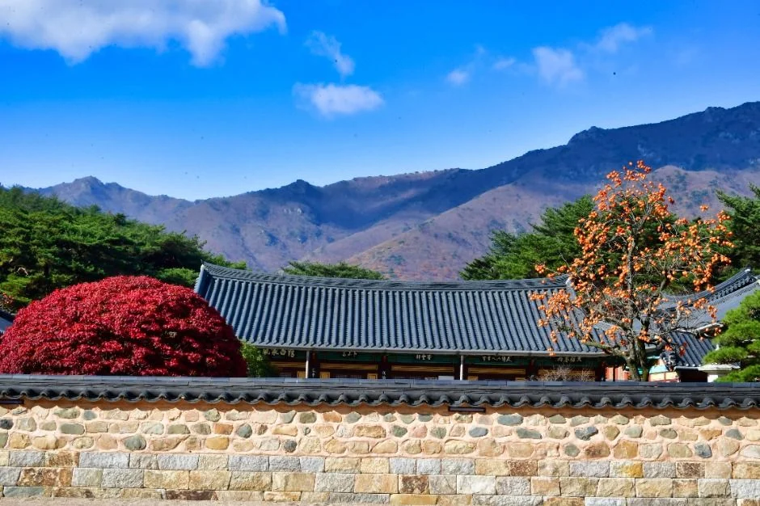
▲ 전각 지붕 너머 산 능선과 붉은 관목·주황빛 나무가 보이는 경내(한국관광공사 제공). 가을로 보이나 촬영일은 확인하지 못했다. 사진=한국관광공사
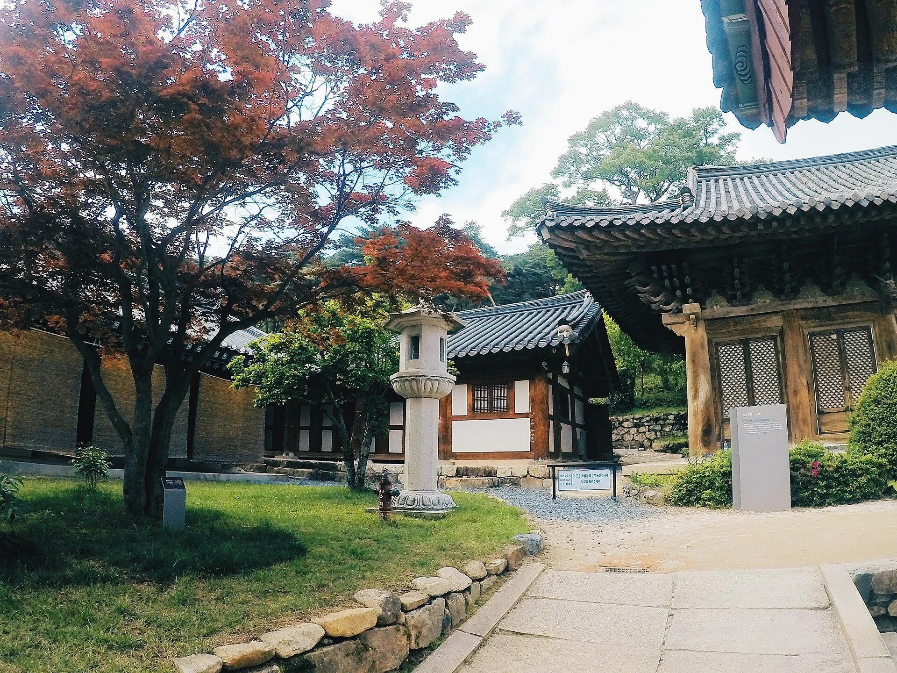
▲ 붉은잎 단풍나무와 석등이 보이는 경내 정원. 위키미디어 기록상 2018년 5월 9일 촬영한 봄 사진이라 가을 단풍이 아니다(파일명 'Tongdosa garden'). 사진=Jaki4594(위키미디어 커먼스, CC BY-SA 3.0)
통도사 공지에 올라온 이번 가을 소식에는 10월 3일자 '통도사(장밭뜰) 메밀꽃 필 무렵'과 '개산1381주년 영축문화축제 국화장엄' 소식이 있다. 즉 이번 달 경내는 국화와 메밀꽃, 11월은 단풍이 중심이 될 가능성이 크다. 단풍 날짜를 확정해 알려 주는 공지는 확인하지 못했다.
6. 올해 가을 행사 — 10월 19일 개산대재까지 일정표
통도사는 2026년이 개산 1381주년이라며 9월 19일~10월 19일 '개산대재 "천년의 꽃을 피우다"' 행사를 공지했다. 아래 일정은 사찰 공지 포스터와 연중행사 달력에서 읽은 값이다. 10월 13일 현재 이미 끝난 행사는 10월 5일 제3회 통도사 합창제와 10월 10일 전국 초·중·고 사생실기대회다.
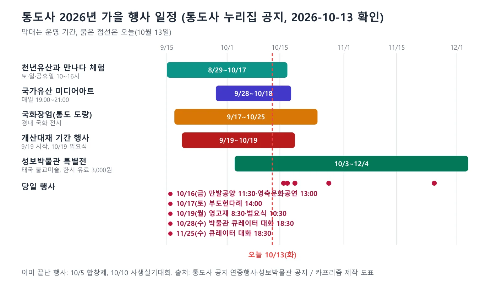
▲ 통도사 가을 행사 일정 도표(통도사 공지 기준, 카프리즘 제작). 사진=카프리즘 제작
| 일시 | 행사 | 장소·비고 |
|---|---|---|
| 8/29~10/17(운영일 달력상 토·일·공휴일, 10:00~16:00) | 세계유산 활용 프로그램 '통도사 천년유산과 만나다' — 가람배치 3D 입체퍼즐 체험, 불화 미디어 전시 | 통도사 경내. 마지막 날 10/17(토) |
| 9/17~10/25 | 국화장엄 | 통도 도량 |
| 9/28~10/18 매일 19:00~21:00 | 2026 국가유산 미디어아트 '통도, 고요에 이르다'(8개 구간) | 산문 입구에서 입장, 입장 마감 20시. 구간 8 '마음의 꽃'은 19:30~20:30 |
| 10/16(금) 11:30 / 13:00 | 지역 어르신을 위한 만발공양 / 영축문화공연 | 장밭뜰 운동장 |
| 10/17(토) 14:00 | 부도헌다례 | 부도원 |
| 10/19(월) 08:30 | 자장율사 영고재 | 개산조당 |
| 10/19(월) 09:30 | 영축삼보 이운 | 부도원 앞 |
| 10/19(월) 10:00 / 10:30 | 괘불헌공 / 개산대재 법요식 | 괘불대 앞 |
| 10/3~12/4 | 성보박물관 상설전 재개관·태국 불교미술 특별전 | 7장 참조 |
| 10/28(수) 18:30, 10/29(목) 18:30 | 박물관 큐레이터 대화(상설전 / 태국 불교미술), 전화·구글폼 접수 | 기획전시실. 11/25·26에도 열림 |
미디어아트 리플릿은 8개 구간을 '시작의 문 → 환영의 빛 → 기억의 저편 → 달빛 물결 → 안개 정원 → 진리의 문 → 빛의 고요 → 마음의 꽃' 순서로 안내하며, 현지 사정과 기상 상황에 따라 운영일과 시간이 바뀔 수 있다고 적었다. 18일까지 닷새가 남았으므로 야간 일정은 이번 주말이 사실상 마지막이다. 개산대재 법요식이 열리는 10월 19일은 월요일이다. 성보박물관은 월요일이 휴관이라 이날 문을 여는지는 공지에서 확인하지 못했다.
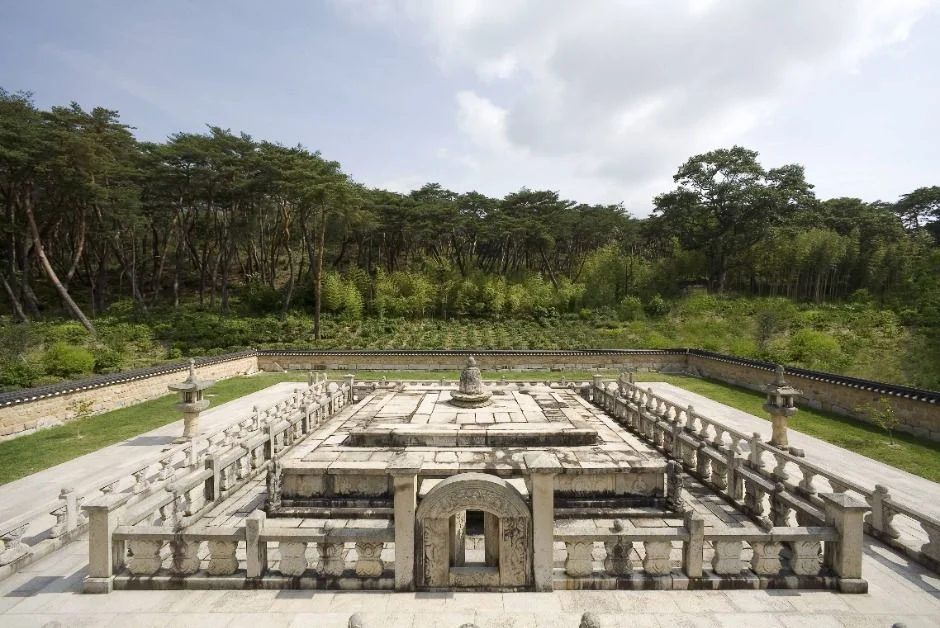
▲ 석난간으로 둘러싸인 금강계단으로 보이는 계단(戒壇)과 뒤쪽 숲(한국관광공사 제공). TourAPI 사진 제목에 장소명은 없고 촬영일도 확인하지 못했다. 사진=한국관광공사
7. 성보박물관 — 10월 3일 재개관, 12월 4일까지 한시 유료
성보박물관은 사찰 공지(2026-09-25)에 따르면 1999년 신관 건립으로 개관한 지 27년 만에 1년간 수리를 마치고 10월 3일 상설전을 개편해 다시 문을 열었다. 같은 날 국립중앙박물관과 공동 주최한 순회특별전 '어메이징 타일랜드: 태국 불교미술'(10월 3일~12월 4일, 태국 국립박물관 소장 유물 55점)이 열렸다. 상설전은 '시공간을 잇는 성보'와 '붓으로 그린 부처님 말씀' 두 주제로 유물 76건 87점을 전시하고, 일반에 처음 공개한 〈오계수호신장도〉와 국내에서 가장 큰 〈청동은입사향완〉이 포함된다고 소개했다.
| 항목 | 내용 | 비고 |
|---|---|---|
| 관람료(한시 유료) | 성인(만 19세 이상) 3,000원, 청소년·어린이(만 8~18세) 2,000원 | 2026-10-03~12-04 |
| 면제 대상 | 국가유공자·장애인·미취학 아동·만 65세 이상·조계종 신도(증빙 필수) | 박물관 공지 |
| 개관 시간 | 하절기(3~10월) 09:30~17:00(입장 마감 16:30), 동절기(11~2월) 09:30~16:30(마감 16:00) | 박물관 홈페이지. 11월부터 동절기 |
| 휴관일 | 매주 월요일, 1월 1일, 설·추석 연휴 | 박물관 홈페이지 |
| 특별전 | 어메이징 타일랜드: 태국 불교미술, 10/3~12/4, 기획전시실 1·2 | '걷는 부처'가 기획전시실 2에 단독 전시 |
| 체험 | '황금빛 소망을 피우다' 상시 체험(금박 붙이기 '삐 통') | 기획전시실 2, 누구나 |
| 교육 | 초등 4~6학년 20명 대상 사원 키트 만들기(10/24·25, 11/21·22 14:00) | 구글폼 접수 |
| 문의 | 학예실 055-382-1001 | 박물관·사찰 공지 |
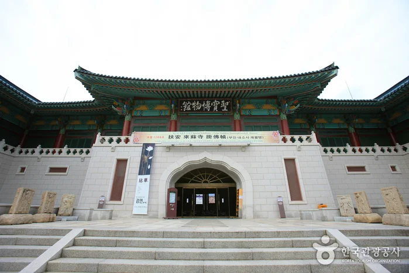
▲ 통도사 성보박물관 정면 계단과 출입구(한국관광공사 제공, 원본 699px). 재개관 전 촬영으로 보이며 촬영 시기는 확인하지 못했다. 사진=한국관광공사
✅ 공식 자료끼리 어긋나는 부분
통도사 입장료 페이지에는 아직 "성보박물관 : 공사 완료 후 재개관, 2026년 12월 준공예정"이라는 옛 문구가 남아 있고, TourAPI는 박물관 이용요금을 '무료'로 표기한다(수정일 2026-08-19). 반면 박물관 홈페이지 공지와 사찰 공지(9월 25일)는 10월 3일 재개관과 한시 유료화를 안내한다. 공지 날짜가 최신인 후자를 기준으로 삼았다. 박물관 홈페이지의 '불교회화실 제한 공개(오전 10~11시·오후 1~4시)' 문구가 재개관 후에도 유효한지는 확인하지 못했다. 성보박물관 홈페이지 바로가기
8. 불교 체험·암자 — 템플스테이와 자장암·극락암
통도사 템플스테이는 한국불교문화사업단 사이트(templestay.com)에서 예약한다. 통도사 템플스테이 공지(2026년 기준 안내)에는 인터넷·전화로 예약하고 3일 안에 입금하지 않으면 승인 불가로 처리하고, 환불은 참가일 5일 전 100%, 3~4일 전 70%, 2일 전 50%이며 하루 전과 당일은 불가라고 적혀 있다. 이 공지의 게시일은 2019년이지만 본문이 2026년을 기준으로 고쳐져 있다. 가격은 카프리즘 템플스테이 예약 기사가 정리한 휴식형 1박 10만 원(1박 2일만 가능)을 따랐고 이번에 다시 확인하지 못했다. TourAPI 소개에는 어두워진 뒤 연꽃등을 들고 보궁에 들어가 사리탑을 마주하는 '보궁명상'이 핵심 프로그램으로 나온다. 템플스테이 사이트에는 11월 시민 참선실 모집 안내도 올라와 있다(상세 일정은 확인하지 못함).
산내 암자는 경내와 차로 이어져 반나절 코스로 붙이기 좋다. 한국관광공사 TourAPI는 자장암을 06:30~17:30(자세한 사항은 전화 문의), 연중무휴, 주차 가능으로 소개한다(수정일 2026-09-11). 설명에 따르면 신라 진평왕 때 자장율사가 바위벽 아래 움집을 짓고 수도한 곳에서 비롯됐고, 바위벽의 마애불은 높이 약 4m로 통도사 산내 유일하며 1896년 조성 기록이 있고 2014년 국가등록문화유산이 됐다. 마애불 뒤 바위에는 금개구리 전설이 얽힌 작은 구멍 '금와공'이 있다. 극락암은 통도사에서 서북쪽 1.5km 산속에 있고, 극락영지와 홍교는 통도 8경의 하나다(TourAPI 극락암, 상시 개방).
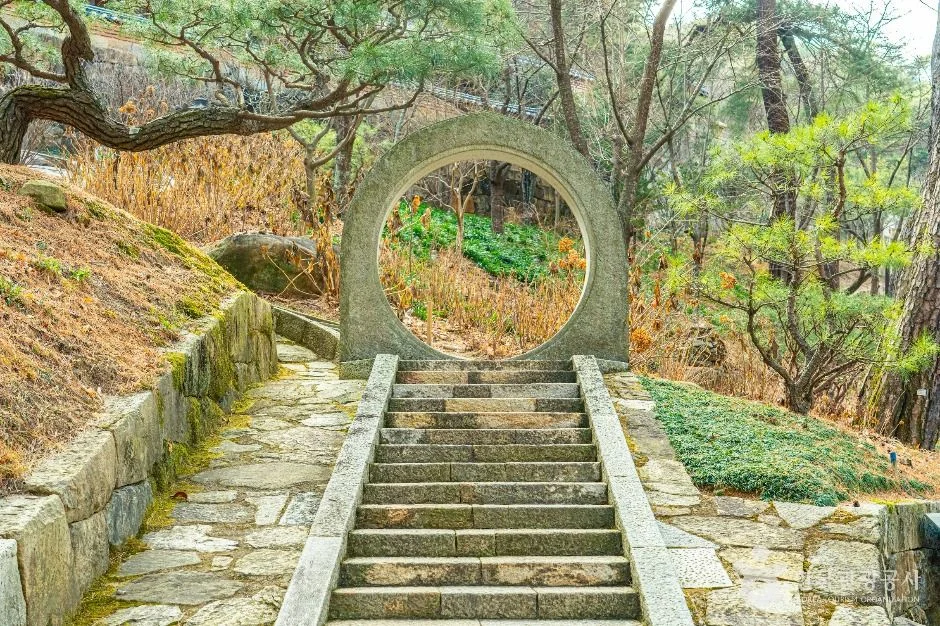
▲ 둥근 문과 돌계단이 이어지는 자장암 일대(한국관광공사 제공, 사진 제목 '통도사 자장암'). 앙상한 숲으로 보아 가을은 아니며 촬영 시기는 확인하지 못했다. 사진=한국관광공사
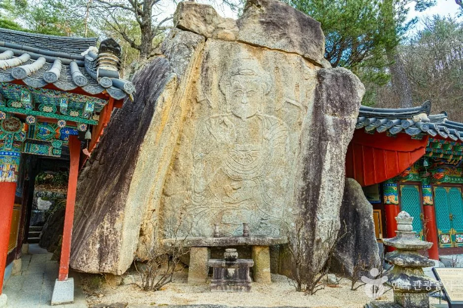
▲ 바위 벽면에 새긴 마애불이 있는 자장암 전각 옆(한국관광공사 제공). 가을 사진이 아니며 촬영 시기는 확인하지 못했다. 사진=한국관광공사
9. 영축산 연계 — 공식 정보는 개방 여부와 암자까지
TourAPI의 영축산 항목(수정일 2026-10-08)은 상시 개방, 연중무휴, 입장료 무료, 주차 가능이고 문의처는 양산시청 산림과(055-392-2994)다. 설명은 영축산이 영남알프스의 한 산이며 양산시 하북면·원동면과 울주군 삼남면에 걸쳐 있고, 통도사가 자리 잡은 산이라고 소개한다. 양산시 관광 누리집의 암자순례길 코스는 통도사 → 서운암 → 자장암 → 극락암 → 비로암 → 도자기공원 순으로 제시된다. 백운암은 통도사 산내 암자 중 가장 높은 곳에 있어 차로 갈 수 없고, 주차장에서 좁고 가파른 등산로를 1시간가량 올라가야 한다고 같은 페이지가 안내한다.
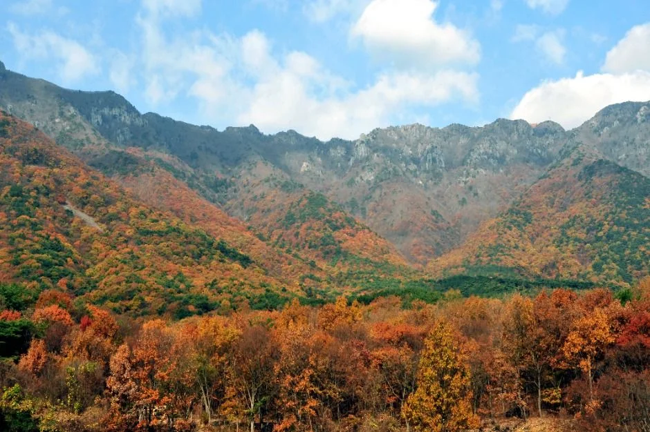
▲ 붉고 주황빛으로 물든 영축산 능선과 산자락(한국관광공사 제공). 촬영 연도는 확인하지 못했다. 사진=한국관광공사
한국관광공사의 신불산 억새평원 기사(2021년 9월 작성 정보)는 억새가 "9월에 개화해서 10월에 절정을 이루는" 꽃이며 "억새 장관이 펼쳐진 구간이 있는 영축산까지 이어 걸어도 좋다", 대중교통을 이용했다면 "통도사나 배내골 방면으로 하산해도 좋다"고 적었다. 억새 코스는 전국 억새 드라이브 코스 기사와 겹치지 않게 연계 가능성만 언급한다.
✅ 영축산 산행 전 확인하지 못한 값
영축산 정상 고도, 통도사 출발 정상 왕복 소요 시간·거리, 올해 입산 통제 공지는 공식 자료에서 확인하지 못했다. 가을철 산불조심기간과 탐방로 통제 날짜는 단풍철 닫히는 길 기사를 참고하고, 산행 전 양산시청 산림과(055-392-2994)에 문의하자. 억새 연계 산행은 하산 교통편을 먼저 정해야 한다.
10. 인근 양산 명소 — 공식 자료로 확인한 곳만
| 장소 | 확인한 내용 | 출처 |
|---|---|---|
| 통도문화예술거리(신평중앙길) | 산문을 나서 오른쪽, 2016년 준공. 자연석 포장 거리, 통도아트센터 문화광장, 양산시농특산물전시판매장 | 양산시 관광 누리집 |
| 서운암 | 도자 삼천불 법당, 전통 천연염색·약된장, 야생화 군락(들꽃축제) | 양산시 관광 누리집(암자순례길) |
| 자장암·극락암 | 암자순례길 코스, 8장 참조 | 양산시·TourAPI |
| 장밭뜰 | 10/3 공지 '메밀꽃 필 무렵'. 10/10 사생실기대회·10/16 만발공양 행사장은 장밭뜰 운동장 | 통도사 소식·행사 공지 |
| 신불산폭포자연휴양림·석남사계곡(울주) | 통도사에서 직선 약 5.6km·7.0km(TourAPI 거리값). 운영 정보는 이번에 확인하지 못함 | TourAPI 주변 검색 |
같은 권역 기사로는 울산 쪽 반구천 암각화 기사와 경주·울산 31번 국도 해안 드라이브 기사가 있다. 다른 삼보사찰 가이드는 해인사·가야산 기사와 송광사·선암사 기사에 있다.
11. 부산·울산에서 가는 법 — 노포동 버스 25분, 울산역 13번 버스 30분
통도사 누리집 '찾아오시는길'과 2026년 2월 24일자 버스 시간표 공지를 합치면 대중교통 선택지가 정리된다. 부산은 지하철 1호선 노포역·동부시외버스터미널에서 신평(통도사)행을 타고 신평터미널(통도사신평버스터미널)에서 내린다. 경부고속도로를 지나 약 25분이고, 하루 24회 운행한다(노포발 첫차 06:20, 막차 21:30 / 신평발 첫차 06:35, 막차 21:45, 푸른교통 051-508-0917). 같은 노선은 언양터미널까지 이어져 노포~언양터미널은 40분 걸린다고 시간표에 적혀 있다.
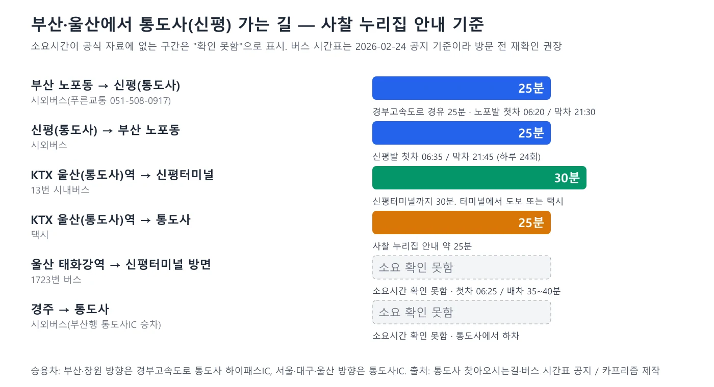
▲ 부산·울산에서 통도사 가는 대중교통 도표(통도사 누리집 기준, 카프리즘 제작). 사진=카프리즘 제작
| 출발 | 방법 | 소요·시간표 | 비고 |
|---|---|---|---|
| 부산 노포동(지하철 1호선 노포역) | 시외버스 신평(통도사)행 | 약 25분, 노포발 06:20~21:30 하루 24회 | 신평터미널 하차 |
| KTX 울산(통도사)역 | 13번 시내버스 → 신평터미널 | 30분 | 터미널에서 도보 또는 택시 |
| KTX 울산(통도사)역 | 택시 | 약 25분 | 사찰 누리집 안내 |
| 울산 태화강역 | 1723번 버스(신평터미널 방면) | 첫차 06:25, 배차 35~40분 | 소요시간 확인 못함 |
| 경주 | 시외버스 부산행 통도사IC 승차 | 확인 못함 | 통도사에서 하차 |
| 승용차(부산·창원 방향) | 경부고속도로 통도사 하이패스IC | - | 주차 3장 참조 |
| 승용차(서울·대구·울산 방향) | 경부고속도로 통도사IC | - | 주말에는 외부 주차장 우선 |
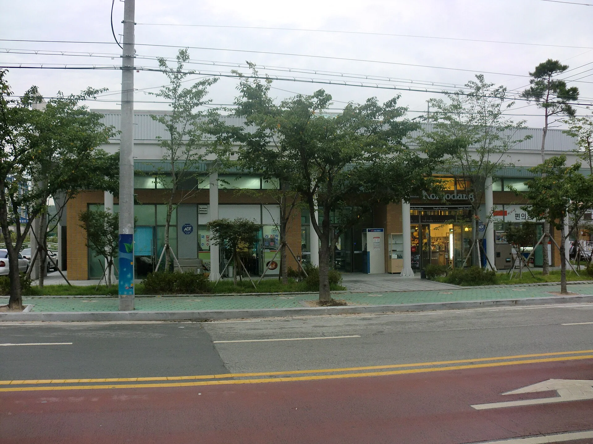
▲ 신평(통도사) 버스터미널 일대. 위키미디어 파일명은 'Tongdosa Sinpyeong Busterminal'이고 위키미디어 기록상 2010년 9월 촬영이라 현재 모습과 다를 수 있다. 사진=hyolee2(위키미디어 커먼스, CC BY-SA 3.0)
버스 시간표는 2026년 2월 공지라 이후 개편 여부를 확인하지 못했다. 방문 전 푸른교통(051-508-0917)에 문의하자. 신평터미널에서 경내까지는 택시나 보행로를 이용하라고 사찰이 안내한다. 부산 주요 드라이브 코스의 주차 사정은 부산 드라이브 목적지 주차 기사와 비교해 볼 수 있다.
12. 기존 통도사 언급 기사와 이 글의 차이
카프리즘에서 통도사를 다룬 기사는 템플스테이 예약 기사와 삼보사찰 소개 문단, 쌍계사 기사의 관람료 언급이 전부였고, 통도사 방문 자체를 다룬 가이드는 없었다. 관람료 면제 구조는 금산사 가이드와 같다. 이 글은 입장료 무료 근거, 주차비·외부 주차장, 무풍한송로 수치, 올해 가을 일정(개산대재·미디어아트·국화장엄), 성보박물관 재개관·한시 유료화, 자료끼리 어긋나는 값에 집중했다.
13. 출발 전 체크리스트
✅ 출발 전 체크리스트
· 입장료 0원(2023-05-04부터), 주차 경차 3,000원·중소형 6,000원·대형 15,000원
· 주말·공휴일은 통도환타지아 주차장5 이용 권장, 요금은 현장 확인
· 무풍한송로 약 1km·20분 남짓(2023년 보도), 걷기 편한 신발
· 성보박물관 10/3~12/4 한시 유료(성인 3,000원), 월요일 휴관, 10/19(월)은 개관 여부 확인 못함
· 이번 주 일정: 10/16 만발공양·영축문화공연, 10/17 부도헌다례(14시), 10/18까지 미디어아트(19:00~21:00)
· 10/19 개산대재 법요식 10:30(괘불대 앞), 영고재 08:30
· 단풍 절정은 공식 예측 없음. 경내 11월 첫째~둘째 주로 추정(카프리즘 판단)
· 영축산 산행은 정상 거리·시간을 확인하지 못했으니 양산시 산림과(055-392-2994) 문의
- 통도사 종무소 055-382-7182 / 템플스테이 055-384-7085
- 성보박물관 학예실 055-382-1001 / 회계실(주차 관련) 055-382-7187
- 양산시청 산림과 055-392-2994
14. 정리
통도사 입장료는 2023년 5월 4일부터 무료이고, 승용차 주차비는 중소형 6,000원(경차 3,000원)이다. 성보박물관은 10월 3일 재개관해 12월 4일까지 성인 3,000원을 받으며 월요일에 쉰다. 무풍한송로는 약 1km다.
10월 18일까지 미디어아트, 25일까지 국화장엄, 19일 개산대재가 이어진다. 단풍 절정은 공식 예측이 없어 11월 첫째~둘째 주로 추정했고, 영축산 정상 소요시간은 확인하지 못했다.